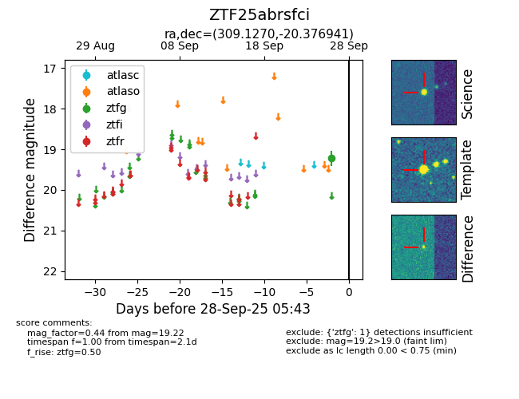

FINK: ZTF25abrsfci
Lasair: ZTF25abrsfci
ALeRCE: ZTF25abrsfci
ZTF25abrsfci (ztf,fink)
equatorial (ra, dec) = (309.1270,-20.37694)
galactic (l, b) = (24.7599,-31.87034)

last ztfg=19.22
1 ztfg detections